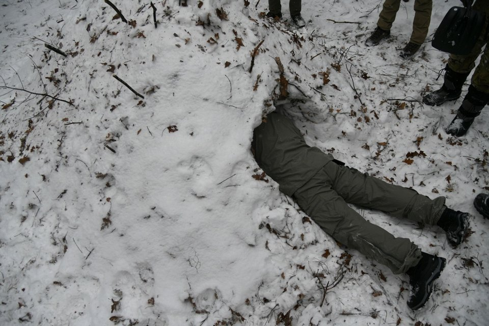

P15 | B012 WINTER SURVIVAL
Snow trench: decide before digging
Do not assume depth means strong snow
CONCEPT / CUTAWAY
Original schematic. Not a measured or field-tested structure.
Materials and upgrades
No gear: favor sheltered terrain and an insulated surface bed.
Improvised: recovered shovel may aid assessment; not roof authorization.
Equipped: trained snow-shelter construction with proper tools and supervision.
ACTION / DECISION SEQUENCE
- Prefer existing stable shelter and insulation if exposure and exhaustion are increasing.
- Assess avalanche terrain, snow consistency, overhanging loads, water and surface drift.
- Without adequate tools, training, and a dependable escape, do not build a roofed trench.
- If trained and conditions are suitable, keep the shelter monitored and exit route clear.
FAILURE: Roofed snow begins cracking or settling, the exit drifts shut, or digging causes heavy sweating and exhaustion.
CHANGE COURSE: Do not occupy beneath uncertain snow. Move to existing shelter or a safer open windbreak, protect dry layers, and contact rescue services.
CHANGE COURSE: Do not occupy beneath uncertain snow. Move to existing shelter or a safer open windbreak, protect dry layers, and contact rescue services.
LIMIT: Snow depth is not proof of roof strength. Roofed snow-trench construction requires suitable conditions, trained judgment, equipment, and an escape plan; this draft is not a build specification.
